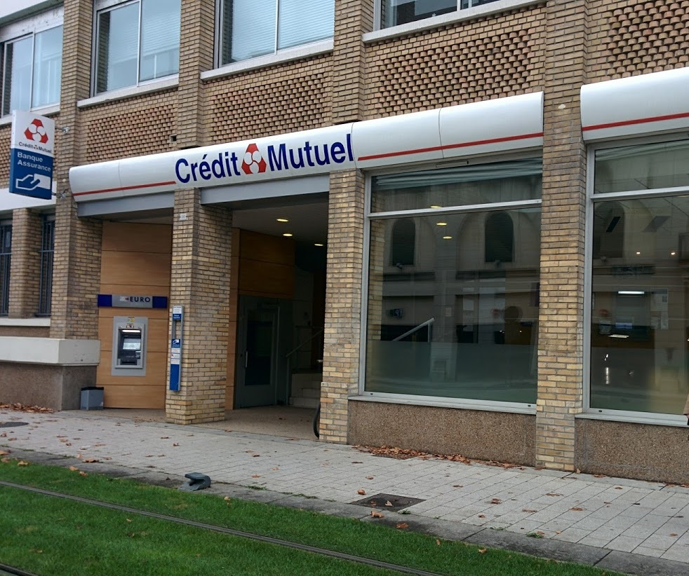
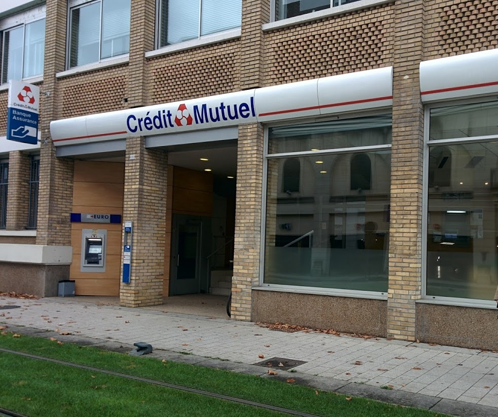
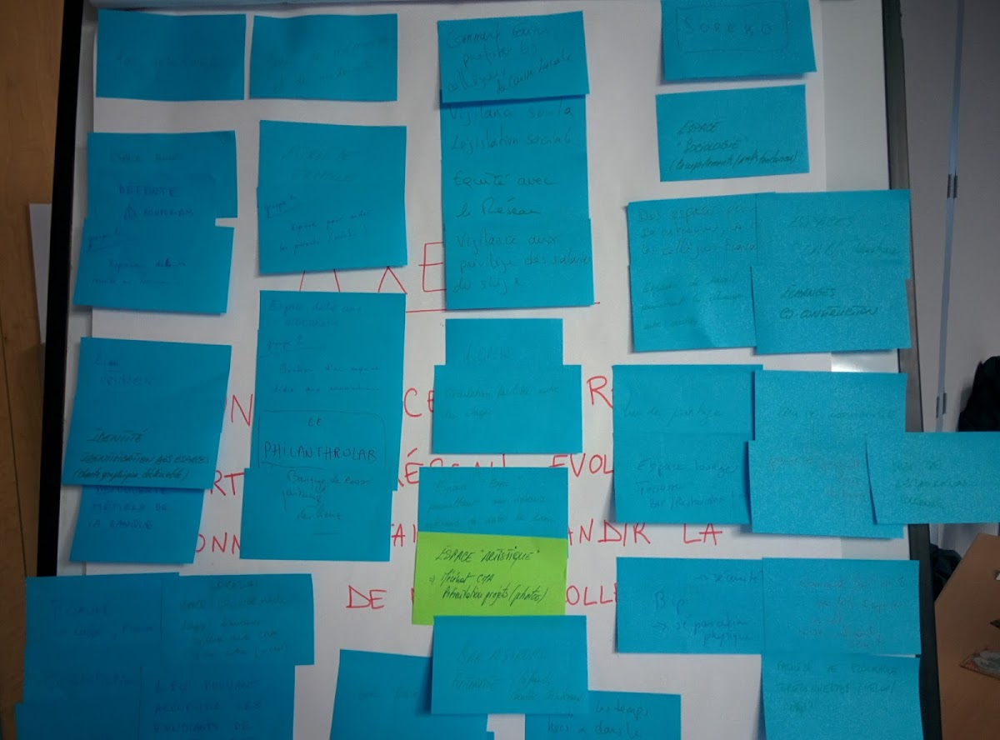
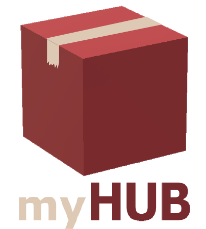
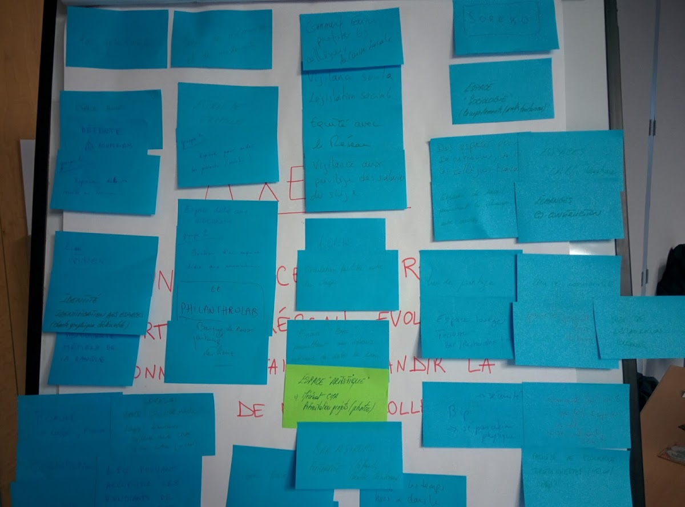
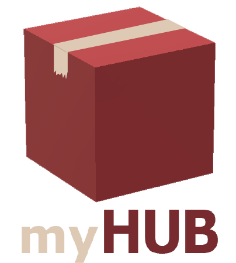
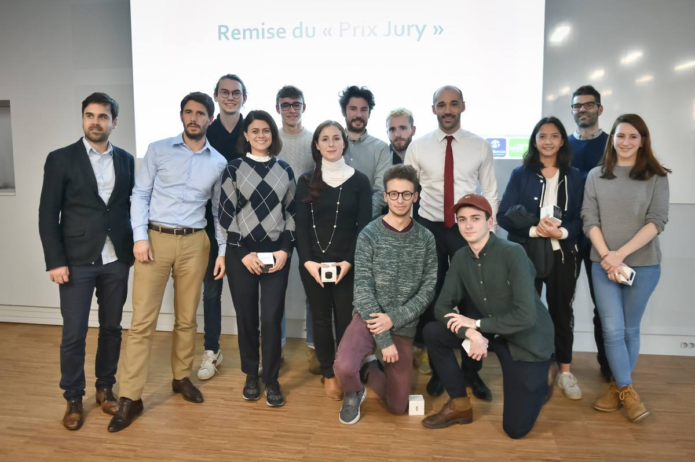
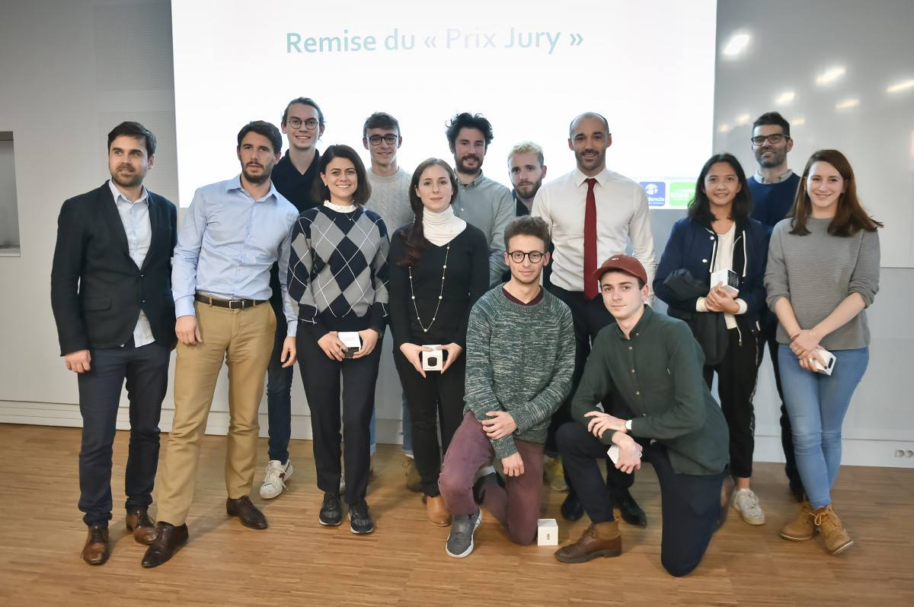

Users Needs Projects
Users Needs Projects Creative Projects
Creative Projects
Elise Morisseau
Users Needs Analyst
&
User Experience Designer
Former work psychologist, by using my competencies in listening, observing, evaluating and counselling, I enhance user experience.
Student in the MS Marketing Design & Creation in Audencia Business School, I complete my abilities in users needs understanding by analyzing business’ needs, defining pratical guidelines and applying creative tools.
Users Needs Projects
Professional Thesis
My thesis searchs to understand how to enhance empathy between professionals and users by a-day-in-a-life-of method. Alike this IDEO designer, Kristian Simsarian which admitted imself as 'a patient', this experience should provoke a big change in the way of thinking users of professionnals.
However, there is no strong study of which conditions are required and enough to make append this new state of mind. So, I aim to identify the conditions which provoke this change in the state of mind of decision makers.
User Experience
I had some class of Ergonomics in recent years. Professionals teached us what is user experience, how to assess it and how to adapt interfaces to human.
So I had observed a students focus group, created a micro-usability test (you can see extract at the right), created a test card and test a website. All these methods have served us to make some recommendations to improve products and services.
Work Psychologist
As a professional, I intervened on differents missions which needed to identify the problems, the needs and make some recommendation to improve the subject's situation.
I received some professionals in face-to-face interview and some services in groups interviews.
Anthropology
This year we also had some classes in Anthropology. In addition to deepen my knowledge about user with an another perspective, I, with my teammate, applied with a concrete study about an specific activity :Warhammer hobbyists.
We observed them during the painting process and questionned them to identify a pain point and how to improve the process with an innovation (you can click on the image to see our website)

Business Projects
Design Thinking Process
The process uses in all our Business Projects is the Design Thinking. With the differents steps, we can create products and services adapted to specific users.
Eurovia
Eurovia is a affiliated company of Vinci Group. They have a specific problematic and with the design thinking process, we aim to understand their users and respond to their needs by innovatives solutions.
First, we searched to understand deeply the problematic. After, we questioned the users to find out their needs and their actual problems. By doing this, we found a specific subject to work on. We presented all our findings to the Eurovia's group project and during a creative meeting, we identified some working axes. Now we are gathering our knowledge to delve into our innovative solutions by identify the conditions of application and prototyping them.
Crédit Mutuel Anjou
The Crédit Mutuel regional headquarters of Maine-Anjou and Basse-Normandie are on a historic building in Angers. Renovate in the 1980's, they aim to adapt the premises to their collaborators and their clients.
We assess the needs of the Crédit Mutuel's clients, diverse collaborators and people which lived in Angers by immerse ourselves in their daily lives. After, we proposed to the project group our findings : innovative way of working, new kind of offices, clients' needs, collaborators' needs and the vision of inhabitants. The projects actors decide what they want upon all these finding and how the renovate headquarters will respond to the major needs.
Hackhaton City Lab
In november and december 2017, we participated to an hackathon organised by L'Alliance. I worked with my team on the urban logistic under the aegis of Niji and Keran Group.
We have designed MyHUB : urban hub spread in all city districts. We won the hackathon with this solution.
IMA Protect
IMA Protect is a company of protection and surveillance. They want us to find innovative way of use some pictures to immerse their clients and show how their solutions can protect a house.


 
 


 

{kind=link}